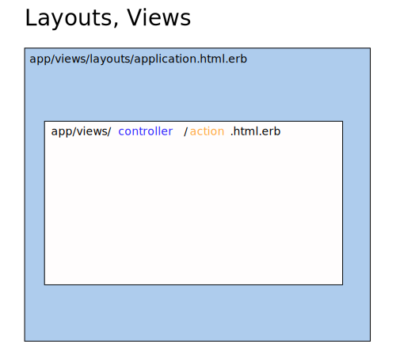
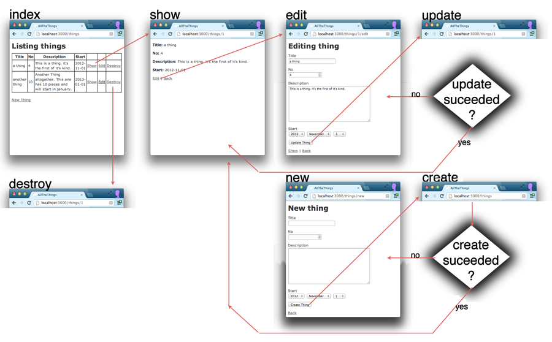

1 The View
The View in the Model-View-Controller pattern is responsible for generating output that will be displayed the user in various ways.
In Ruby on Rails Embedded Ruby (ERB) is normally used as the templating languages to define the views. If you have used templates in other languages or have used PHP embedded in HTML than you will recognize the similarities.
Both Web Designers and Web Developers might want to edit the files concerning the view. (This is one of the points where using git to relove merge conflicts comes in handy!).
1.1 layouts and views
If you look at the resulting HTML document you can see code that originates
in two main files: the layout and the view. There normally is one layout for
the whole app, stored in app/views/layout/application.html.erb. It contains
one yield statement, which then includes the current view.
Every action of a controller has it's own view, stored in app/views/CONTROLLER/ACTION.html.erb.

Rails offers many ways to enhance this basic setup, the first you should know about
are partials: sub-templates that can be included using the render method:
<%= render :partial => "shared/topmenu" %> <%= render :partial => "form" %>
You should be aware that the filenames for partials contain a leading underscore, so
rendering form actually includes a file _form.html.erb.

1.2 erb is embedded ruby
the template format normally used in rails is erb, html with embedded ruby.
There is one major other template language: HAML. But you should start your
first rails project with erb.
-
<% ruby code here %>just evaluates the code -
<%= ruby code here %>evaluates the code and includes the result
You can use all of rubys conditions, loops, etc in erb. Very often you
will use instance variables (recognizable by the @ sign) that were
filled in by the controller, and output them or iterate over them:
<% @ideas.each do |idea| %>
<p>
<strong><%= idea.name %></strong>
<%= idea.description %>
</p>
<% end %>
1.3 static content
anything placed in the folder public is directly accessible in the web space,
without going through the rails stack. In an empty rails project you will find at
least the following files there:
-
404.html,422.html,500.htmlfor HTML error messages. these should work even if everything else breaks down -
favicon.icoreplace this with your icon -
robots.txtadd your robot rules here
1.4 links
When programming a rails app you will never write links "by hand" using the HTML <a> tag.
Rail knows about your URLs, your controllers and actions, and offers you helper methods
to use this knowledge:
-
link_to 'link text here', objectlinks to show action of the object -
link_to 'link text here', some_pathlinks to the path created by the helper methodsome_path
Use rake routes to find out the names of urls/paths
1.5 Learn from Zombies
Now do Rails for Zombies Level #3 to learn the basics of views.
To delve deeper into Layout and Rendinerg read the Rails Guide
2 The Controller
The controller is the central part of MVC. One Controller gets called for every HTTP request. The controller than uses the model(s) to load and manipulate the right data, and finally displays the resulting page by rendering a view.
2.1 restful resources
a rails convention about which http methods and urls you should use, and which controllers and methods you should use.
in config/routes.rb
resources :zombies

GET /zombies zombies_controller def index POST /zombies zombies_controller def create GET /zombies/new zombies_controller def new GET /zombies/:id/edit zombies_controller def edit GET /zombies/:id zombies_controller def show PUT /zombies/:id zombies_controller def update DELETE /zombies/:id zombies_controller def destroy
2.2 Now do 'Rails for Zombies' Episode no 4
3 Nested Resources
- one model belongs to another, and is dependent
has_many :cards, :dependent => :destroy- makes sense to nest urls:
- /boards/3/cards - all the cards in board 3
3.1 model:
has_many :cards, :dependent => :destroy
3.2 routes file:
resources :boards do resources :cards end
3.3 Routes constructed by nested resources
GET /boards POST /boards GET /boards/new GET /boards/:id/edit GET /boards/:id PUT /boards/:id DELETE /boards/:id GET /boards/:board_id/cards POST /boards/:board_id/cards GET /boards/:board_id/cards/new GET /boards/:board_id/cards/:id/edit GET /boards/:board_id/cards/:id PUT /boards/:board_id/cards/:id DELETE /boards/:board_id/cards/:id
3.4 Changes
If you switch to nested resources you need to change
a lot of links: Instead of cards_path you will need boards_cards_path(board).
Another change is needed in the form for editing or creating a card:
<%= form_for [ @board, @card ] do |f| %>
4 Form Helpers
When you write a Rails App, you never write form- or input-Tags by hand.
You always use form helpers to contruct the HTML for you. You gain a lot of
functionality by using the helpers, but you also need to understand how they work.
5 Further reading
- Rails Guide: Layouts and Rendering in Rails
- Rails Guide: Action Controller Overview
- Rails Guide: Rails Routing from the Outside In
- link_to
- before_filter
- resources